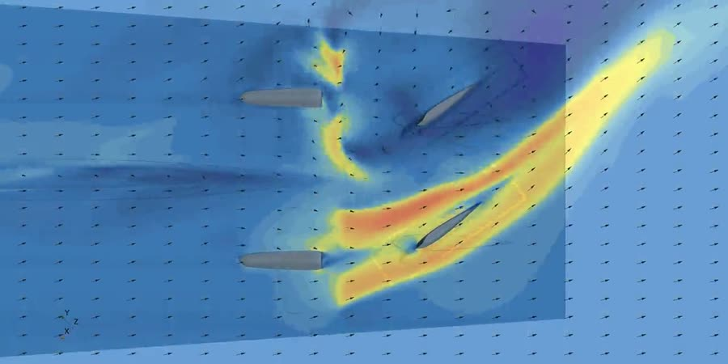
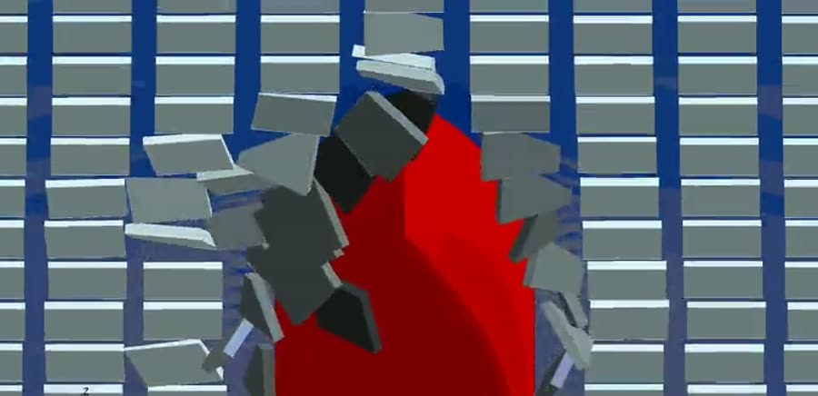

인하대학교 조선해양공학과
Dept. of Naval Architecture and Ocean Engineering
Inha University
지도교수
송순석 Soonseok Song, Ph.D.
인하대학교 조선해양공학과 학과장 · 조교수
연구실
2N483
전화번호
032-860-7338
Email
s.song@inha.ac.kr
연구분야
전산유체역학(CFD) · 실험유체역학(EFD) · 선박저항 및 유체성능 · 해양신재생에너지
46SCIE 논문
23h-index
32i10-index
1,667피인용
학력사항
2018 – 2020
박사
University of Strathclyde (영국)
조선해양공학
2015 – 2017
석사
인하대학교
조선해양공학
2015 – 2016
석사
Newcastle University (영국)
해양플랜트공학
2008 – 2015
학사
인하대학교
조선해양공학
경력사항
2025 – 현재
학과장
인하대학교 조선해양공학과
2022 – 현재
조교수
인하대학교 조선해양공학과
2019 – 2022
연구원
University of Strathclyde (영국)
수상 및 학술활동
2026
신진교수상 — 인하대학교
2024
송암상 — 대한조선학회
2022
Honorable Mention, Vice Admiral E. L. Cochrane Award — SNAME (미국 조선학회)
2026 – 현재
대한조선학회 편집이사
2025 – 현재
대한조선학회 함정기술연구회 산학협력분과 간사
2024 – 현재
중부지방해양경찰청 구조기술자문팀
2021 – 2022
국제해사기구(IMO) GloFouling Partnerships — Consultant
주요 연구과제
2026 – 2028
한국산업기술기획평가원
한·미 공동연구를 통한 AI 기반 무인수상함 핵심솔루션 개발 및 실증
2026 – 2030
해양수산과학기술진흥원
북극 신항로 개척을 위한 친환경 쇄빙컨테이너선 개발
2025 – 2028
한국산업기술기획평가원
북극 고위도 연중 운항이 가능한 세계 최고 수준의 PC 2급 쇄빙선 개발
2024 – 2028
한국에너지기술평가원
15MW+급 부유식해상풍력 계류선 하중 모니터링 및 하중 저감장치 개발
2022 – 2025
한국연구재단
불균일한 선체 거칠기에 따른 선박 저항증가 예측기법 연구
1 / 3
주요 연구분야
Research Scope
선박해양저항연구실
Resistance Hydrodynamics Laboratory
본 연구실은 선박 유체역학을 중심으로 연구를 수행하며,
전산유체역학(CFD)을 주된 도구로 삼고 수조 실험을 통해 이를 검증합니다.
선체 거칠기와 오손에 따른 저항 증가, 파랑 중 조종 및 내항 성능, 극지 선박의 빙 저항을 다루며,
해양신재생에너지를 또 하나의 축으로 조류발전 터빈과 부유식 해상풍력을 연구합니다.
모형과 실선 사이의 축척 문제, 즉 실험실에서 잰 값이 실제 바다에서 어떻게 달라지는가에
연구의 상당 부분이 놓여 있습니다.
선체 거칠기 및 저항 성능Roughness Effect and Ship Hydrodynamics
해양생물 오손과 방오도료에 의한 선체 거칠기가 저항에 미치는 영향을 규명합니다.
거칠기는 모형과 실선 사이에서 축척할 수 없어 모형시험만으로는 답을 얻을 수 없으므로,
유동채널 실험으로 거칠기 함수를 구하고 상사법칙으로 실선에 확장하며
수정 벽함수 CFD로 3차원 유동장까지 다룹니다.
최근에는 산업계와 함께 친환경 방오도료 및 그 성능평가 기법 개발에 참여하고 있습니다.

6자유도 조종 시뮬레이션6-DOF Manoeuvring Simulations
구속 없이 스스로 조타·가속·횡동요하는 자유항주 CFD로 악천후 중 침로유지,
추진·조타 실패 시 거동, 자율운항선박 경로추종을 해석합니다.
에너지 절감 장치Energy Saving Devices
공기윤활 시스템과 풍력보조추진(WASP)을 다룹니다. 특히 WASP는 CFD뿐 아니라
SIL(Software-in-the-Loop) 실험기법으로 예인수조에서 직접 계측합니다.

극지 선박Arctic Ships
유체와 개별 빙편을 함께 푸는 CFD–DEM 연성해석으로 빙 저항을 예측하며,
2026년 Newcastle University와 협업하여 인공빙을 이용한 아라온호 빙중 저항시험을 수행하였습니다.
부유식 해상풍력Floating Offshore Wind Turbine
CFD–MoorDyn 연성해석 기법을 개발하여 계류선 파단 시 거동을 추적하며,
최근에는 Actuator Line Method와 AI 대리모델–CFD 연성기법으로 확장하고 있습니다.
조류발전Tidal Turbine
자체 개발한 BEMT 기반 터빈 설계 프로그램으로 블레이드를 설계하고,
회류수조 시험과 CFD로 검증합니다. 에너지자립 해상교량 국책과제도 수행 중입니다.
응용 · 환경 유체역학Applied & Environmental Hydrodynamics
해상가두리 양식장의 용존산소 수송 모델링과 교각 주변 세굴 해석 등,
선박에서 개발한 해석 기법을 환경 문제로 확장합니다.
2 / 3
연구실 구성원
Members & Research Output
선박해양저항연구실
Resistance Hydrodynamics Laboratory
연구원
민경서Gyeongseo Min
선박 조종성 · 에너지 절감 장치 · 조류터빈
주저자 7 · 공저자 5
윤해찬Haechan Yun
선체 거칠기 · 선박 조종성 · 빙 저항
주저자 1 · 공저자 8
도영욱Younguk Do
부유식 해상풍력 · 로터세일 · 극지 선박
주저자 1 · 공저자 7
김강민Kangmin Kim
조류터빈 · 프로펠러 모델링
주저자 1 · 공저자 5
정경현Keounghyun Jung
세굴 예측 CFD 모델 개발
공저자 3
김민기Mingi Kim
부유식 해상풍력 · Actuator Line Method
송승희Seunghee Song
조류터빈 성능 해석
연구원 모집
CFD와 수조실험에 관심 있는 대학원생·학부연구생을 상시 모집합니다
s.song@inha.ac.kr
졸업생
최우석 Wooseok Choi ·
2025년 졸업 · 現 한화오션
학위논문 Speed penalty of a naval ship due to biofouling ·
주저자 2편 · 공저자 5편
최근 주요 연구실적
Do, Y., et al. (2026). CFD–MoorDyn coupling analysis for mooring line failure events of parked floating offshore wind turbine. Ocean Engineering, 363, 126703.
Kim, K., et al. (2026). Wave-induced effects on tidal turbine performance and structural loading. Ocean Engineering, 362, 126189.
Min, G., et al. (2026). Seakeeping analysis of a damaged ship using CFD. Ocean Engineering, 362, 126200.
Min, G., et al. (2026). Experimental analysis of resistance reduction and heel motion characteristics of wind-assisted vessels using the SIL system. Ocean Engineering, 354, 124905.
Min, G., et al. (2026). Influence of CFD modelling parameters on air injection behaviour in ship air lubrication systems. JMSE, 14(2), 234.
Yun, H., et al. (2025). CFD analysis of container ship manoeuvring performance under different trim conditions. Ocean Engineering, 341, 122489.
Min, G., et al. (2025). Evaluation of push-pull manoeuvring mode for a naval ship using CFD. Ocean Engineering, 330, 121143.
Choi, W.-S., et al. (2024). Resistance and speed penalty of a naval ship with hull roughness. Ocean Engineering, 312, 119058.
Song, S., et al. (2024). Townsin's formula vs CFD: Evaluating hull roughness effect in ship resistance. Ocean Engineering, 303, 117754.
Song, S., et al. (2023). An advanced prediction method of ship resistance with heterogeneous hull roughness. Ocean Engineering, 279, 114602.
전체 논문 목록 및 연구 소개 · soonseok-song.github.io인하대학교 조선해양공학과 2N483 · 032-860-7338